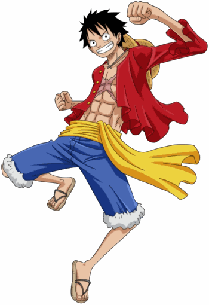
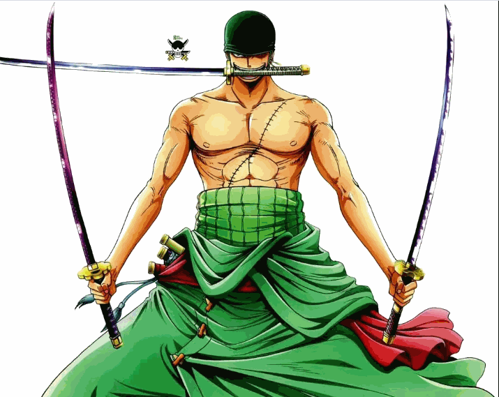
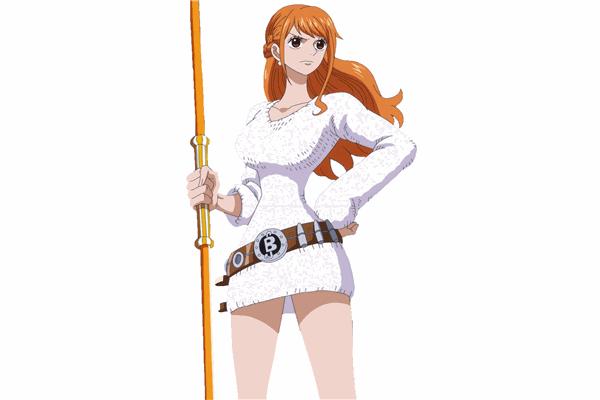
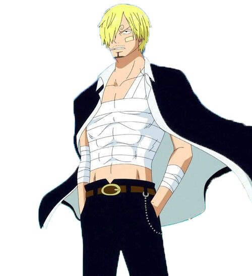

One Piece
L'histoire de One Piece -que ce soit dans le manga ou l'anime- est généralement divisée en arcs narratifs pour en faciliter la compréhension. Bien que les divisions exactes soient quelque peu fluctuantes, il est généralement admis qu'un arc commence lorsque L'Équipage du Chapeau de Paille débarque sur une île spécifique et se termine lorsqu'il la quitte.
Tous ces arcs narratifs sont regroupés en sagas plus larges, qui tendent à refléter les objectifs et/ou les ennemis que les Chapeaux de Paille poursuivent sur plusieurs îles.
Monkey D. Luffy : le capitaine
Personnage central de One Piece, Luffy est un garçon plein d’entrain qui compte bien devenir un jour le roi des pirates. Un brin naïf, il est prêt à tous les sacrifices pour aider ses amis et défendre les plus faibles. Accompagné par son mystérieux pouvoir, il est le premier à se jeter au-devant du danger.
Son corps devenu élastique grâce à un fruit du démon lui permet d’encaisser les coups mieux que personne. Il porte toujours un chapeau de paille offert par le capitaine Shanks Le Roux auquel il tient comme à la prunelle de ses yeux.
Roronoa Zoro, l’épéiste
Le premier à rejoindre Luffy n’est autre que l’épéiste Roronoa Zoro et sa force est aussi impressionnante que son manque de sens de l’orientation. Il se bat avec trois sabres et certaines de ses attaques font référence aux samouraïs. Si son comportement peut parfois être excessif, il reste quelqu’un de réfléchi qui sait souvent faire preuve d’un haut sentiment de respect vis-à-vis de ses compagnons et de ses adversaires.
Point culture : il a été librement inspiré du pirate François l’Olonnais qui est considéré comme l’un des flibustiers les plus cruels de l’Histoire.
Nami, la navigatrice
Nami est surnommée « La Voleuse » en raison de ses frasques et l’avis de recherche posé au-dessus de sa tête. Avant de rencontrer Luffy, elle était persuadée que tous les pirates étaient mauvais. Lorsqu’elle rejoint l’équipage, elle devient la navigatrice mais aussi la trésorière.
Malheureusement pour les membres de l’équipage, elle a les idées bien en place et demande souvent des intérêts élevés à ceux qui lui réclament de l’argent.
Autoritaire, elle n’hésite pas à donner des ordres, même à Luffy. Si elle n’aime pas se battre, elle a néanmoins deux armes qui sont le bâton climatique et le « sorcery climat tact » qu’elle n’hésite pas à utiliser pour protéger ses amis.
Sanji, le cuistot
Sanji est le cuistot de l’équipage. Il est surnommé « Sanji la Jambe Noire » en raison de ses coups de pied destructeurs. Véritable passionné de l’art culinaire, il cuisine pour tout le monde, même si ce « tout le monde » englobe aussi de dangereux pirates.
Mais si Sanji est doué en cuisine, il l’est aussi avec les femmes. Inutile de dire que cela lui joue bien des tours lorsqu’il les combat. Quoi qu’il en soit, Sanji est un combattant redoutable.
Petite anecdote : c’est à la vue de Nami que Sanji a voulu entrer dans l’équipage mené par Luffy.
